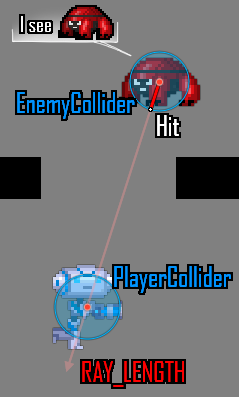
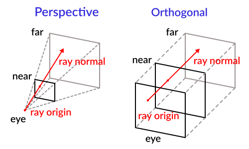

Ray-casting
Introduction
One of the most common tasks in game development is casting a ray (or custom shaped object) and checking what it hits. This enables complex behaviors, AI, etc. to take place. This tutorial will explain how to do this in 2D and 3D.
Godot stores all the low-level game information in servers, while the scene is only a frontend. As such, ray casting is generally a lower-level task. For simple raycasts, nodes like RayCast3D and RayCast2D will work, as they return every frame what the result of a raycast is.
Many times, though, ray-casting needs to be a more interactive process so a way to do this by code must exist.
Space
In the physics world, Godot stores all the low-level collision and physics information in a space. The current 2d space (for 2D Physics) can be obtained by accessing CanvasItem.get_world_2d().space. For 3D, it's Node3D.get_world_3d().space.
The resulting space RID can be used in PhysicsServer3D and PhysicsServer2D respectively for 3D and 2D.
Accessing space
Godot physics runs by default in the same thread as game logic, but may be set to run on a separate thread to work more efficiently. Due to this, the only time accessing space is safe is during the Node._physics_process() callback. Accessing it from outside this function may result in an error due to space being locked.
To perform queries into physics space, the PhysicsDirectSpaceState2D and PhysicsDirectSpaceState3D must be used.
Use the following code in 2D:
func _physics_process(delta):
var space_rid = get_world_2d().space
var space_state = PhysicsServer2D.space_get_direct_state(space_rid)
public override void _PhysicsProcess(double delta)
{
var spaceRid = GetWorld2D().Space;
var spaceState = PhysicsServer2D.SpaceGetDirectState(spaceRid);
}
Or more directly:
func _physics_process(delta):
var space_state = get_world_2d().direct_space_state
public override void _PhysicsProcess(double delta)
{
var spaceState = GetWorld2D().DirectSpaceState;
}
And in 3D:
func _physics_process(delta):
var space_state = get_world_3d().direct_space_state
public override void _PhysicsProcess(double delta)
{
var spaceState = GetWorld3D().DirectSpaceState;
}
Raycast query
For performing a 2D raycast query, the method PhysicsDirectSpaceState2D.intersect_ray() may be used. For example:
func _physics_process(delta):
var space_state = get_world_2d().direct_space_state
# use global coordinates, not local to node
var query = PhysicsRayQueryParameters2D.create(Vector2(0, 0), Vector2(50, 100))
var result = space_state.intersect_ray(query)
public override void _PhysicsProcess(double delta)
{
var spaceState = GetWorld2D().DirectSpaceState;
// use global coordinates, not local to node
var query = PhysicsRayQueryParameters2D.Create(Vector2.Zero, new Vector2(50, 100));
var result = spaceState.IntersectRay(query);
}
The result is a dictionary. If the ray didn't hit anything, the dictionary will be empty. If it did hit something, it will contain collision information:
if result:
print("Hit at point: ", result.position)
if (result.Count > 0)
{
GD.Print("Hit at point: ", result["position"]);
}
The result dictionary when a collision occurs contains the following
data:
{
position: Vector2 # point in world space for collision
normal: Vector2 # normal in world space for collision
collider: Object # Object collided or null (if unassociated)
collider_id: ObjectID # Object it collided against
rid: RID # RID it collided against
shape: int # shape index of collider
metadata: Variant() # metadata of collider
}
The data is similar in 3D space, using Vector3 coordinates. Note that to enable collisions
with Area3D, the boolean parameter collide_with_areas must be set to true.
const RAY_LENGTH = 1000
func _physics_process(delta):
var space_state = get_world_3d().direct_space_state
var cam = $Camera3D
var mousepos = get_viewport().get_mouse_position()
var origin = cam.project_ray_origin(mousepos)
var end = origin + cam.project_ray_normal(mousepos) * RAY_LENGTH
var query = PhysicsRayQueryParameters3D.create(origin, end)
query.collide_with_areas = true
var result = space_state.intersect_ray(query)
private const int RayLength = 1000;
public override void _PhysicsProcess(double delta)
{
var spaceState = GetWorld3D().DirectSpaceState;
var cam = GetNode<Camera3D>("Camera3D");
var mousePos = GetViewport().GetMousePosition();
var origin = cam.ProjectRayOrigin(mousePos);
var end = origin + cam.ProjectRayNormal(mousePos) * RayLength;
var query = PhysicsRayQueryParameters3D.Create(origin, end);
query.CollideWithAreas = true;
var result = spaceState.IntersectRay(query);
}
Collision exceptions
A common use case for ray casting is to enable a character to gather data about the world around it. One problem with this is that the same character has a collider, so the ray will only detect its parent's collider, as shown in the following image:

To avoid self-intersection, the intersect_ray() parameters object can take an
array of exceptions via its exclude property. This is an example of how to use it
from a CharacterBody2D or any other collision object node:
extends CharacterBody2D
func _physics_process(delta):
var space_state = get_world_2d().direct_space_state
var query = PhysicsRayQueryParameters2D.create(global_position, player_position)
query.exclude = [self]
var result = space_state.intersect_ray(query)
using Godot;
public partial class MyCharacterBody2D : CharacterBody2D
{
public override void _PhysicsProcess(double delta)
{
var spaceState = GetWorld2D().DirectSpaceState;
var query = PhysicsRayQueryParameters2D.Create(globalPosition, playerPosition);
query.Exclude = [GetRid()];
var result = spaceState.IntersectRay(query);
}
}
The exceptions array can contain objects or RIDs.
Collision Mask
While the exceptions method works fine for excluding the parent body, it becomes very inconvenient if you need a large and/or dynamic list of exceptions. In this case, it is much more efficient to use the collision layer/mask system.
The intersect_ray() parameters object can also be supplied a collision mask.
For example, to use the same mask as the parent body, use the collision_mask
member variable. The array of exceptions can be supplied as the last argument as well:
extends CharacterBody2D
func _physics_process(delta):
var space_state = get_world_2d().direct_space_state
var query = PhysicsRayQueryParameters2D.create(global_position, target_position,
collision_mask, [self])
var result = space_state.intersect_ray(query)
using Godot;
public partial class MyCharacterBody2D : CharacterBody2D
{
public override void _PhysicsProcess(double delta)
{
var spaceState = GetWorld2D().DirectSpaceState;
var query = PhysicsRayQueryParameters2D.Create(globalPosition, targetPosition,
CollisionMask, [GetRid()]);
var result = spaceState.IntersectRay(query);
}
}
See Code example for details on how to set the collision mask.
3D ray casting from screen
Casting a ray from screen to 3D physics space is useful for object picking. There is not much need to do this because CollisionObject3D has an "input_event" signal that will let you know when it was clicked, but in case there is any desire to do it manually, here's how.
To cast a ray from the screen, you need a Camera3D
node. A Camera3D can be in two projection modes: perspective and
orthogonal. Because of this, both the ray origin and direction must be
obtained. This is because origin changes in orthogonal mode, while
normal changes in perspective mode:

To obtain it using a camera, the following code can be used:
const RAY_LENGTH = 1000.0
func _input(event):
if event is InputEventMouseButton and event.pressed and event.button_index == 1:
var camera3d = $Camera3D
var from = camera3d.project_ray_origin(event.position)
var to = from + camera3d.project_ray_normal(event.position) * RAY_LENGTH
private const float RayLength = 1000.0f;
public override void _Input(InputEvent @event)
{
if (@event is InputEventMouseButton eventMouseButton && eventMouseButton.Pressed && eventMouseButton.ButtonIndex == MouseButton.Left)
{
var camera3D = GetNode<Camera3D>("Camera3D");
var from = camera3D.ProjectRayOrigin(eventMouseButton.Position);
var to = from + camera3D.ProjectRayNormal(eventMouseButton.Position) * RayLength;
}
}
Remember that during _input(), the space may be locked, so in practice
this query should be run in _physics_process().